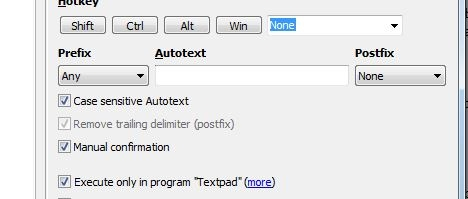
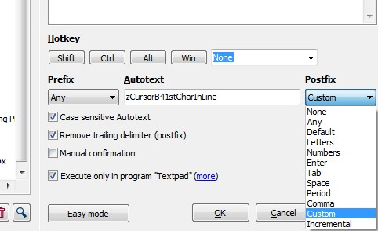
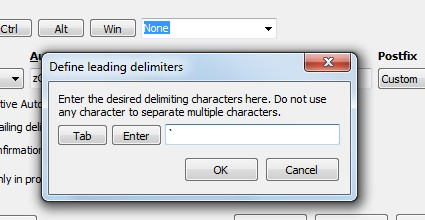
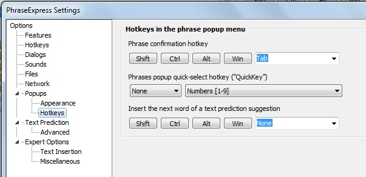

[BACK] (XBN-PhraseExpress is released under the LPGL 2.1)
Broadly speaking, there are two types of phrases in XBN-PhraseExpress: "Normal" and "ddmenu".
[GO] Normal phrases are triggered by either typing (or calling) their autotext, or clicking their "hotkey" (key-command). There are four main types of "normal" phrases:[GO] DDMenu items are phrases that are only triggered manually, by finding-and-then-selecting them from within its drop-down-menu.[GO] Drop-down menus in XBN-PhraseExpress are configured to appear and behave in a certain way.When importing a file into PhraseExpress, that "px.txt" file (which becomes a ".px" folder) adopts the settings of its parent folder. For this reason, normal phrases should be imported separately from ddmenus. Also note, however, that once imported, the phrase-folder maintains its settings, even if moved out of its parent.
[top] XBNPE phrase-type: DDMenu itemDDMenu item phrases are, naturally, members of a drop-down-menu (heirarchical pop-up menu). They are not intended to be called by other phrases, and they cannot be executed via their autotext. They must be specifically found within its menu triggered.
DDMenu item phrases are only for direct use by the user. It must first be found from within its drop-down-menu , and then triggered. Drop-down-menus in XBN-PhraseExpress are also configured to appear and behave in a certain way.
In XBN-PhraseExpress, there are two main drop-down menus. One is navigated by typing (or backspacing over) specific characters, as displayed in each menu item (each header-item contains its--and its children's--autotext). The other is navigated with either arrows (or by typing the displayed guide numbers).
Drop-down-menu phrases have the following setup, where the following two items are the most critical:
None")
[top] XBNPE phrase-type: NormalA "normal" phrase is one triggered by:
'`', or zACCENT).{#insert zThePhraseToCall}'cpb'There are four types of "normal" phrases: commands, variables, actions, and phrase-creators
By default, "normal" phrases in XBN-PhraseExpress have the following setup:
'`' (zACCENT, the accent character which, on my keyboard, is on the same key as the tilde ['~'], just below the [Esc] key). This is assigned via the "Custom" prefix.

It does say "leading", even though this is for the postfix.
Since this is the only prefix used in XBN-PhraseExpress, it is recommended to have the accent-key setup as the default postfix.
[top] XBNPE phrase-type: ActionAn "action" phrase is one called by you, via typing its autotext or hitting its key-command ("Hotkey"), for the purpose of doing something right now. Example actions:
pc2: Compress a single two-line phrase into its one-line (and importable) version.cpb: Executes the phrase whose name is currently in the clipboard.hbp: Used to create surround the clipboard text in a bold-tag:
<B>[Esc]</B>Most actions are not commands--they are not intended to be called by other phrases. However, many actions provide, or are equal to, a "raw" version that is indeed a command. For example, "pc2" uses (but is not equal to) the raw command "zzWWoffpc2RAW".
Actions that specifically generate phrase-calls are called phrase-creators.
Note that some actions may prompt the user for the current word-wrap state before proceeding.
[top] XBNPE phrase-type: CommandA "command" is a phrase intended to be called only from other phrases. Command phrase-names typically start with a single 'z'. Example commands:
zApCC: The x-key-press for {#ALT -chars c}.zKeyPressSlow: Changes XBNPE execution speed.zOpenExplorerDirSelectTargetFile_M_dirFnm: Opens a Windows Explorer window, with a particular file selected. The "_M_dirFnm" postfix is an XBN-PhraseExpress naming convention, indicating this phrase requires two specific variables in order to function.In general, phrases starting with multiple 'z'-s should not be directly called. However, there are some "sub" phrases that may be useful. For example, many action phrases make a "raw" command-version avaliable, and this raw-command usually starts with two 'z'-s.
Note that in some larger phrase-files, higher numbers of 'z'-s are used at the start of phrase-names, to logically order the phrase-lines. In most cases, however, the fewer 'z'-s that start a phrase's name, the more likely that phrase is directly callable.
[top] XBNPE phrase-type: Variable[Go to Naming conventions, phrases requiring vars]
An XBNPE "variable" is a phrase that holds a single static value (meaning it contains no unescaped PhraseExpress code), and is to be treated as "critical but temporary". This means while that the values held in an XBNPE-variable are critical to the phrases or processes that use them, once the process is completed, those variables may be safely deleted.
Phrase location
XBN-PhraseExpress >
XBNPE Key-presses (XKP) & basic utilities >
Temporary variable storage -- ctvv_folder
As alluded to in its name, this folder has an autotext of "ctvv_folder". This folder-autotext is part of every SETPHRASE:
{#SETPHRASE -description zvVAR_NAME -content the variable's value -autotext zvVAR_NAME -folder ctvv_folder}
The entire contents of this folder--every XBNPE-variable--may be safely deleted at any time. Do not ever, however, delete the folder itself.
Note that the most commonly-used variables have some pre-built commands associated to them. For example, zvNUMBER is the standard "temp counter" variable, and has these two useful commands:
zvNUMBER_st0, for initializing the counter, andzvNUMBER_incBy1, for incrementing it.(The special zTSlp phrase is treated like a variable, in that it is created and deleted by other phrases, but otherwise behaves like a command.)
[BACK] Phrase-types: Variables: Naming conventionsAll XBNPE-variable names start with "zv" and are followed by all-capital letters, separated by underscores. The name should be short and highly abbreviated--it is only necessary to understand the name within the context of the processes in which it is used. Therefore,
zvCMD_ABRV_1C
is perfectly acceptable, because this variable has meaning within the TPKC project (it's the command-abbreviation, "one"-case, meaning only the first character is uppercase), which is the only place where it is used. The name is meaningless outside of the TPKC project.
The most commonly-used and user-facing variables are more descriptive, such as:
zvDIRECTORY and zvFILE_NAME, which are used by many file-manipulation phrases, such as "zDirFileSaveClose_M_dirFnm".zvQB_STR_LIST, zvQB_LENGTH, zvQB_STRING, and zvSTRING, which are used by "sQuare-Bracketed Lists".zvDIVIDEND_TOP and zvDIVISOR_BTM, which are the input for division-related phrases. The output of these particular phrases are stored in zvQUOTIENT, zvMODULO, zv1_IF_MOD_GT0, and zvTTL_DIV_BLKS[BACK] Phrase-types: Variables: Phrases requiring variablesMany phrases require one or more variables, in order for it to function properly. This is indicated by the "_M_..." phrase-name postfix. Further examples:
zRplcBtnAllTD_hnrIf_M_hnry: Indicates that 'zvHNR_YES' is required. When equal to "yes", then when the replace button is pressed, it should 'H'andle the possibility that 'N'o matches ('R'eplacements) may be found (doing so results in a "ding"). When equal to '' (nothing), then it is expected that at least one replacement is made--the benefit of which is no dings, and faster performance.zQblLenFromSelf_M_qbl: Indicates that "zvQB_STR_LIST" is required._M_..." list is all lowercase. Each following variable is 1-cased (only the first character is upper). All are highly-abbreviated.
When a function requires many variables, it may make the phrase's name too long to include them all in the "_M_..." postfix. Consider in this case, appending, for example, "_M_7zv". In all cases, the phrase's description or internal documentation will (should!) say specifically what variables are needed. Such as:
zDirFileOpen_M_dirFnm -- Needs zvDIRECTORY, zvFILE_NAME
or
zzzREonRplcNxtCmdLnBlkForCallVPM4EachCmdInCat_M_dvsrRmgcmdsNumTdb -(*Needs*)-
(*Needs zvDIVISOR_BTM, zvRMNG_CMDS, zvCUR_BLK_NUM, zvTTL_DIV_BLKS*)...
[top] XBNPE-DDMenus: Configuring appearance and behaviorBy default, the main drop-down-menus in XBN-PhraseExpress (or, more accurately, all ddmenu-item phrases) have the following appearance and hot-key setup. It is recommended that you set it up in the same way, since all XBNPE documentation assumes it.
PhraseExpress > Tools > Settings > Options > Popups
There is one important setting on this screen:
Popup contents
which should be set to
"Description - QuickKey"
It is also recommended that the "Sort" item be
Description / Alphabetically / Ascending
All other settings on this particular screen are less critical. My setup:
Continue below.

There are two critical settings on
PhraseExpress > Tools > Settings > Options > Popups > Hotkeys
Tab"None" and "Numbers [1-9]"The other item on this screen are less critical. My setup:
